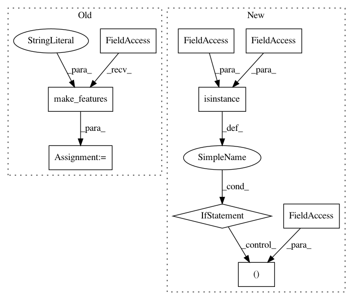

93930abf795db0300aebab280154acaf0f6162ae,onmt/trainer.py,Trainer,_gradient_accumulation,#Trainer#Any#Any#Any#Any#,239
Before Change
report_stats.n_src_words += src_lengths.sum().item()
// this method unsqueezes its input
tgt_outer, _ = inputters.make_features(batch, "tgt")
bptt = False
for j in range(0, target_size-1, trunc_size):
// 1. Create truncated target.
After Change
else:
trunc_size = target_size
src, src_lengths = batch.src if isinstance(batch.src, tuple) \
else (batch.src, None)
if src_lengths is not None:
report_stats.n_src_words += src_lengths.sum().item()
tgt_outer = batch.tgt
In pattern: SUPERPATTERN
Frequency: 3
Non-data size: 9
Instances
Project Name: OpenNMT/OpenNMT-py
Commit Name: 93930abf795db0300aebab280154acaf0f6162ae
Time: 2019-01-25
Author: dylan.flaute@gmail.com
File Name: onmt/trainer.py
Class Name: Trainer
Method Name: _gradient_accumulation
Project Name: OpenNMT/OpenNMT-py
Commit Name: 93930abf795db0300aebab280154acaf0f6162ae
Time: 2019-01-25
Author: dylan.flaute@gmail.com
File Name: onmt/trainer.py
Class Name: Trainer
Method Name: validate
Project Name: OpenNMT/OpenNMT-py
Commit Name: 93930abf795db0300aebab280154acaf0f6162ae
Time: 2019-01-25
Author: dylan.flaute@gmail.com
File Name: onmt/translate/translator.py
Class Name: Translator
Method Name: _run_encoder